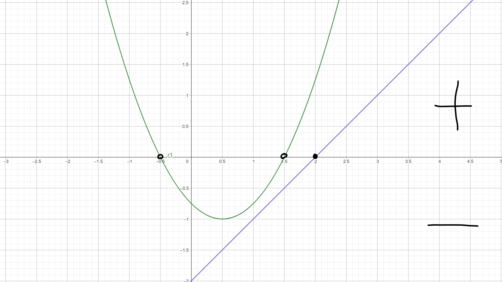

(3b) Je dána funkce \(f(x) = x^2 − 2x + 1\). Spočtěte hodnotu rozdílu \(f(t + 1) − f(t − 1)\).
(3b) Mějme tři čísla zapsaná v pětkové soustavě: \(34315_5\), \(122_5\) a \(2040_5\). Vyjádřete jejich součet také v pětkové soustavě.
\[ \begin{array}{ccccc} \ & 3 & 4 & 3 & 1_5 \\ \ & & 1 & 2 & 2_5\\ \ & 2 & 0 & 4 & 0_5\\ \hline\\ 1 & 1 & 1 & 4 & 3_5\\ \end{array} \]
(3b) Mezi čísly \(a, b, c, d, e\) platí následující vztahy. Číslo \(a\) je rovno \(b\), \(a\) je větší nebo rovno \(c\), \(d > b\) a \(e < a\). Který z následujících výroků nemůže být pravdivý?
(7b) Petr a Pavel mají stejně vysoký plat. Pavel platí o čtvrtinu vyšší nájem než Petr. Nájem bytu stojí Pavla 25% jeho platu. Kolik procent svého platu platí za nájem Petr?
| Přímá úměrnost | ||
|---|---|---|
| Pavel | Plat \( \frac {5}{4}\) | 25% |
| Petr | Plat \(1\) | x% |
\[ x=\frac{25*1}{\frac{5}{4}}\] \[ x=\frac{25*4}{5}\] \[ x=\frac{100}{5}\] \[ x=20\]
(7b) Které z následujích tvrzení o definičním oboru funkce \(f(x)=\sqrt{\frac{x-2}{x^2-x-\frac{3}{4}}}\)je pravdivé?
Jmenovatel zlomku nesmí být 0. 0 nelze dělit. \[x^2-x-\frac{3}{4}\neq0\] \[D=1-4*1*(-\frac{3}{4})=1+3=4\] \[x_{1,2}\neq\frac{1\pm\sqrt{4}}{2}\] \[x_{1}\neq\frac{3}{2}\] \[x_{1}\neq-\frac{1}{2}\]
Druhá odmocnina musí být nezáporná.(\(\sqrt{x}\le0\))
V odmocnině máme zlomek a ten bude nezáporný pokud \(\frac{+}{+}=+\), nebo \(\frac{-}{-}=+\)
\[ \begin{array}{|c|c|c|c|c|} \hline\\ \ & (-∞,-\frac{1}{2}) & (-\frac{1}{2},\frac{3}{2}) & (\frac{3}{2},2) & ⟨2,∞)\\ \hline\\ \ |x-2|& - & \boldsymbol{-} & - & \boldsymbol{+}\\ \hline\\ \ |x^2-x-\frac{3}{4}|& + & \boldsymbol{-} & + & \boldsymbol{+}\\ \hline \end{array} \]
(7b) Nalezněte řešení rovnice a rozhodněte, které tvrzení je pravdivé. \(|2x-1|-|2-3x|=-x\)
Nulové body: \(x_1=\frac{1}{2}, x_2=\frac{2}{3}\) \[ \begin{array}{|c|c|c|c|} \hline\\ \ & (-∞,\frac{1}{2}) & ⟨\frac{1}{2},\frac{2}{3} & (\frac{2}{3},∞) \\ \hline\\ \ |2x-1|& \boldsymbol{-} & + & \boldsymbol{+} \\ \hline \ |2-3x|& \boldsymbol{+} & + & \boldsymbol{-} \\ \hline \end{array} \]
1. Řešení pro \(x\in(-∞,\frac{1}{2})\) \[-(2x-1)+[-(2-3x)]=-x\] \[-2x+1-2+3x=-x\] \[-1-x+3x=0\] \[-1+2x=0\] \[2x=1\] \[x=\frac{1}{2}\] Neleží v intervalu
2. Řešení pro \(x\in⟨\frac{1}{2},\frac{2}{3}⟩\) \[+(2x-1)+[-(2-3x)]=-x\] \[2x-1-2+3x=-x\] \[5x-3=-x\] \[6x-3=0\] \[6x=3\] \[x=\frac{3}{6}\] \[x=\frac{1}{2}\] Leží v intervalu
3. Řešení pro \(x\in(\frac{2}{3},∞)\) \[+(2x-1)-[-(2-3x)]=-x\] \[2x-1+(2-3x)=-x\] \[2x-1+2-3x=-x\] \[-x+1=-x\] \[1\neq0\] Nemá řešení
(7b) Pytle s bramborami byly do skladu přivezeny ve třech etapách. V prvním etapě bylo přivezeno 15% celkového počtu pytlů. Průměrná hmotnost jednoho ptyle v první etapě byla 51 kg. Průměrná hmotnost pytle v druhé etapě byla 55 kg a ve třetí etapě 48 kg. Celková průměrná hmotnost pytle brambor v tomto skladu je 50,55 kg. Určete, kolik procent z celkového počtu pytlů bylo přivezeno ve druhé etapě.
Zjednodušme si úlohu - základ je 100 pytlů (ekvivalentně 100 procent)
1. etapa - 15 pytlů, prum. hmotnost 51 kg, celkem =\(15*51\)
2. etapa - x pytlů, prum. hmotnost 55 kg, celkem = \(x*55\)
3. etapa - (100-15-x) pytlů, prum hmotnost 48kg, celkem = \((100-15-x)*48\)
Hmostnost všech pytlů získáme sečtením všech etap. \[15*51+x55+(100-15-x)*48\] Potom vydělíme hmotnost všech pytlů počtem pytlů(100) a z toho dostaneme aritmetický průměr 50,55kg.
Rovnice bude vypadat následovně. \[\frac{15*51+55x+(100-15-x)*48}{100}=50,55\] \[15*51+55x+(85-x)*48=5055\] \[765+55x+85*48-48x=5055\] \[765+55x+4080-48x=5055\] \[4845+7x=5055\] \[7x=210\] \[x=30\]
(7b) Najděte všechna reálná řešení nerovnice \(\log_{\frac{1}{2}}(x^2)-\log_{\frac{1}{2}}(x-1)<0.\)
Platí, že \(\log_{}()>0\).
\[x^2>0\]
\[x_1\in(-∞,0)\cup(0,∞)\]
\[x-1>0\]
\[x>1\]
\[x_2\in(1,∞)\]
Najdi průnik mezi \(x_1\in(1,∞)\) a \(x_2\in(-∞,0)\cup(0,∞)\)
Průnik je \(x\in(1,∞)\)
(7b) Nalezněte řešení rovnice \(3^x+5*4^x=2*4^{x+1}-3^{x+1}\) a rozhodněte, které tvrzení je pravdivé.
\[3^x+5*4^x=2*4^{x+1}-3^{x+1}\] \[3^x+5*4^x=2*4^{x}*4-3^{x}*3\] \[3^x+5*4^x=4^{x}*8-3^{x}*3\] \[3^{x}*3+3^x+5*4^x=4^{x}*8\] \[3^{x}*(3+1)=4^{x}*8-5*4^x\] \[3^{x}*4=4^{x}*(8-5)\] \[3^{x}*4=4^{x}*3\] \[\frac{3^{x}*(4)}{4^{x}}=3\] \[\frac{3^{x}}{4^{x}}=\frac{3}{4}\] \[(\frac{3}{4})^x=(\frac{3}{4})^1\] \[x=1\]
(7b) Určete první člen \(a_1\) a diferenci \(d\) reálné aritmetické posloupnosti, pokud víte, že součet čtvrtého a pátého členu je 4 a součin čtvrtého a pátého členu je 5.
\[a_4+a_5=4\] \[a_4*a_5=5\] \[\ldots\ldots\ldots\ldots\ldots\ldots\] \[a_4=\frac{5}{a_5}\] \[\frac{5}{a_5}+a_5=4\] \[5+a_5^2=4a_5\] \[a_5^2-4a_5+5=0\] \[D=16-4*1*5=-4\]
Naleznéte obor hodnot funkce \(f(x)=2x^2-5x+3\).
\[2x^2-5x+3=a\] \[2x^2-5x+3-a=0\] \[D=25-8*(3-a)=25-24+8a=1+8a\] \[1+8a\geq0\] \[8a\geq-1\] \[a\geq-\frac{1}{8}\]
(7b) Jestliže \(y=2e^{3x-1}\), pak \(y \in ⟨\frac{1}{2},2⟩\) právě pro
\[y=2e^{3x-1}\] \[\frac{y}{2}=e^{3x-1}\] \[\ln(\frac{y}{2})=ln(e^{3x-1})\] \[\ln(\frac{y}{2})=(3x-1)\] \[x=\frac{\ln(\frac{y}{2})+1}{3}\]
Dosazení za \(y = \frac{1}{2}\). \[x=\frac{\ln(\frac{\frac{1}{2}}{2})+1}{3}\] \[x=\frac{\ln(\frac{1}{2}*\frac{1}{2})+1}{3}\] \[x=\frac{\ln(\frac{1}{4})+1}{3}\] \[x=\frac{1-\ln(4)}{3}\]
Dosazení za \(y = 2\). \[x=\frac{\ln(\frac{2}{2})+1}{3}\] \[x=\frac{\ln(1)+1}{3}\] \[x=\frac{1}{3}\]
(7b) Kolika způsoby lze 12 hráčů rozdělit na dvě šestičlenná družstva?
Nyní máme všechny způsoby rozdělení šestičlenného družstva, 6 hráčů vždycky z výběru 12 zbyde. Tudíž máme vždycky druhý tým automaticky zvolený. \[924/2 = 462\]
(7b) Jaká je pravděpodobnost, že při dvou hodech stejnou šestibokou kostkou bude součet obvou hodů 10?
Hody jsou 2, takže počítejme, jako by jsme ty kostky měli 2. Hledáme součet 10 na obou kostkách. Buď se podíváme na všechny možnosti a z nich vyloučíme počet, kdy se součet rovná 10, nebo na to půjdeme logicky:
6+1 = 7 málo
6+2 = 8 málo
6+3 = 9 málo
6+4 = 10 ano (když se změní pořadí tak to je druhá možnost)
teď už máme 2 možnosti
zkusíme o číslo nižší a dosadíme k němu číslo, aby byl součet 10
5+5 = 10 tak tady už to možné je (čísla jsou stejná, takže se nedá rozlišit pořadí)
tak to máme vyřešené všechny možnosti celkem 3
Máme 2 kostky o 6 číslech. 6*6=36
\[\frac{3}{36}=\frac{1}{12}\]
(7b) Určete hodnoty reálného parametru p tak, aby v rovnici \(3x^2-24x+p=0\) byl jeden kořen trojnásobkem druhého kořene, a rozhodněte, které tvrzení je pravdivé.
\[D=24^2-4*3*p=576-12p\] \[4+\frac{\sqrt{576-12p}}{6}=3*(4-\frac{\sqrt{576-12p}}{6})\] \[24+\sqrt{576-12p}=18*(4-\frac{\sqrt{576-12p}}{6})\] \[24+\sqrt{576-12p}=72-3\sqrt{576-12p}\] \[\sqrt{576-12p}=-3\sqrt{576-12p}+48\] \[4\sqrt{576-12p}=48\] \[\sqrt{576-12p}=12\] \[576-12p=144\] \[12p=432\] \[p=36\]
(7b) Z jakého nejmenšího počtu shodných krychlí, s velikostí hrany v centimetrech vyjádřenou přirozeným číslem, můžeme sestavit kvádr o rozměrech 8, 12 a 28cm?
Cheme největší krychli, krychle má všechn hrany stejně dlouhé => Největší společný dělitel
\[NSD(8,12,28)=4cm\]
\[8/4=2\] \[12/4=3\] \[28/4=7\] \[2*3*7=42\]
Objem krychle \[V_k = 4^3 = 64 cm^3\]
Objem hranolu \[V_h = 12 * 16 * 20= 2688 cm^3\]
\[V_h/V_k=2688/64 = 42\]